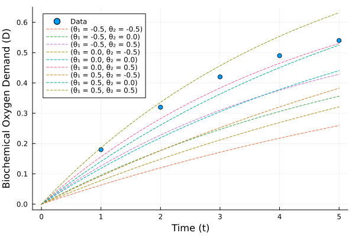
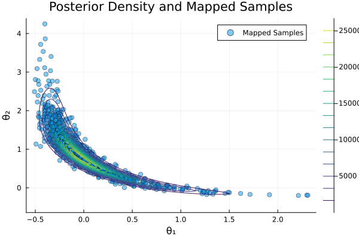
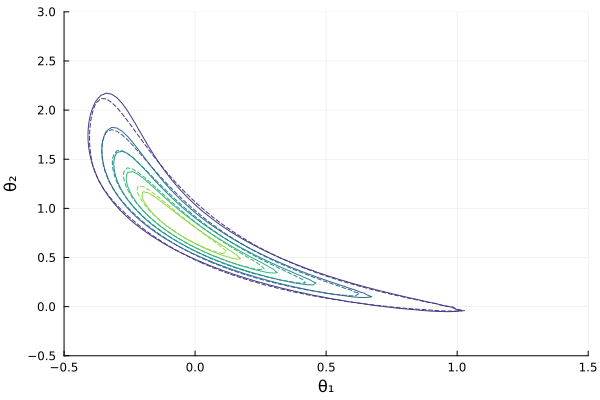

Biochemical Oxygen Demand (BOD) Example
This example demonstrates Bayesian parameter estimation for a biochemical oxygen demand model using transport maps. The problem comes from environmental engineering and was originally presented in [8] and later used as a benchmark in transport map applications [1].
The model describes the evolution of biochemical oxygen demand (BOD) in a river system using an exponential growth model with two uncertain parameters controlling growth and decay rates.
using TransportMaps
using Plots
using Distributions
using SpecialFunctionsThe Forward Model
The BOD model is given by:
\[\mathcal{B}(t) = A(1-\exp(-Bt))+\mathcal{E}\]
where the parameters A and B are functions of the uncertain inputs θ₁ and θ₂:
\[\begin{aligned} A &= 0.4 + 0.4\left(1 + \text{erf}\left(\frac{\theta_1}{\sqrt{2}} \right)\right) \\ B &= 0.01 + 0.15\left(1 + \text{erf}\left(\frac{\theta_2}{\sqrt{2}} \right)\right) \end{aligned}\]
and ℰ ~ 𝒩(0, 10⁻³) represents measurement noise.
function forward_model(t, x)
A = 0.4 + 0.4 * (1 + erf(x[1] / sqrt(2)))
B = 0.01 + 0.15 * (1 + erf(x[2] / sqrt(2)))
return A * (1 - exp(-B * t))
end
#hide nothingforward_model (generic function with 1 method)Experimental Data
We have BOD measurements at five time points:
t = [1, 2, 3, 4, 5]
D = [0.18, 0.32, 0.42, 0.49, 0.54]
σ = sqrt(1e-3)
#hide nothing0.03162277660168379Let's visualize the data along with model predictions for different parameter values:
s = scatter(t, D, label="Data", xlabel="Time (t)", ylabel="Biochemical Oxygen Demand (D)",
size=(600, 400), legend=:topleft)
# Plot model output for some parameter values
t_values = range(0, 5, length=100)
for x₁ in [-0.5, 0, 0.5]
for x₂ in [-0.5, 0, 0.5]
plot!(t_values, [forward_model(ti, [x₁, x₂]) for ti in t_values],
label="(x₁ = $x₁, x₂ = $x₂)", linestyle=:dash)
end
end
Bayesian Inference Setup
We define the posterior distribution using a standard normal prior on both parameters and a Gaussian likelihood for the observations:
\[\pi(\mathbf{y}|\boldsymbol{\theta}) = \prod_{t=1}^{5} \frac{1}{\sqrt{2\pi\sigma^2}}\exp\left(-\frac{1}{2\sigma^2}(y_t - \mathcal{B}(t))^2\right)\]
function posterior(x)
# Calculate the likelihood
likelihood = prod([pdf(Normal(forward_model(t[k], x), σ), D[k]) for k in 1:5])
# Calculate the prior
prior = pdf(Normal(0,1), x[1]) * pdf(Normal(0,1), x[2])
return prior * likelihood
end
target = TargetDensity(posterior, :auto_diff)TargetDensity(gradient_type=:auto_diff)Creating and Optimizing the Transport Map
We use a 2-dimensional polynomial transport map with degree 3 and Softplus rectifier:
M = PolynomialMap(2, 3, Softplus())PolynomialMap:
Dimensions: 2
Total coefficients: 14
Maximum degree: 3
Basis: Hermite
Rectifier: Softplus
Components:
Component 1: 4 basis functions
Component 2: 10 basis functions
Coefficients: min=0.0, max=1.390671161567e-309, mean=2.63987836333836e-310
Set up Gauss-Hermite quadrature for optimization:
quadrature = GaussHermiteWeights(10, 2)GaussHermiteWeights:
Number of points: 100
Dimensions: 2
Quadrature type: Tensor product Gauss-Hermite
Reference measure: Standard Gaussian
Weight range: [1.858172610271843e-11, 0.11877833902739371]
Weight sum: 0.9999999999999994
Points (first 5):
[-4.859462828332312, -4.859462828332312] → weight: 1.858172610271843e-11
[-3.581823483551927, -4.859462828332312] → weight: 3.2677804672640156e-9
[-2.484325841638953, -4.859462828332312] → weight: 8.238338476283024e-8
[-1.4659890943911627, -4.859462828332312] → weight: 5.840231806713457e-7
[-0.48493570751550125, -4.859462828332312] → weight: 1.4856333877315967e-6
... and 95 more
Optimize the map coefficients:
@time res = optimize!(M, target, quadrature)
println("Optimization result: ", res) 11.883163 seconds (168.96 M allocations: 9.833 GiB, 5.15% gc time, 3.76% compilation time)
Optimization result: * Status: success
* Candidate solution
Final objective value: -6.229888e+00
* Found with
Algorithm: L-BFGS
* Convergence measures
|x - x'| = 2.18e-09 ≰ 0.0e+00
|x - x'|/|x'| = 1.35e-09 ≰ 0.0e+00
|f(x) - f(x')| = 1.12e-13 ≰ 0.0e+00
|f(x) - f(x')|/|f(x')| = 1.80e-14 ≰ 0.0e+00
|g(x)| = 6.68e-09 ≤ 1.0e-08
* Work counters
Seconds run: 11 (vs limit Inf)
Iterations: 123
f(x) calls: 368
∇f(x) calls: 368Generating Posterior Samples
Generate samples from the standard normal distribution and map them to the posterior:
samples_z = randn(1000, 2)1000×2 Matrix{Float64}:
-0.71734 -0.174579
1.54274 -0.204213
1.52108 -0.425212
0.702431 -0.254735
-0.184504 1.03153
0.0873686 -0.0962195
-0.598102 0.566983
0.438224 0.010725
-0.082205 -0.395963
-0.139243 -0.429648
⋮
0.644835 -0.182378
-0.883518 -0.729537
0.830809 -0.241907
0.835752 -2.01087
-0.316602 -0.651423
0.734829 -0.898434
-0.505107 0.919138
-0.674642 -0.0607392
0.570508 0.660668Map the samples through our transport map:
mapped_samples = reduce(vcat, [evaluate(M, z)' for z in eachrow(samples_z)])1000×2 Matrix{Float64}:
-0.231809 1.24385
0.695389 0.0781555
0.677921 0.0717312
0.181853 0.457815
-0.116857 1.21751
-0.0428005 0.810542
-0.208937 1.37754
0.073908 0.631075
-0.0904372 0.852416
-0.10537 0.876934
⋮
0.15662 0.495776
-0.261437 1.18796
0.241885 0.394675
0.244306 0.220396
-0.148667 0.928662
0.196498 0.372475
-0.19006 1.41935
-0.223783 1.24982
0.125508 0.645758Quality Assessment
Compute the variance diagnostic to assess the quality of our approximation:
var_diag = variance_diagnostic(M, target, samples_z)
println("Variance Diagnostic: ", var_diag)Variance Diagnostic: 0.011699325538388386Visualization
Plot the mapped samples along with contours of the true posterior density:
x₁ = range(-0.5, 1.5, length=100)
x₂ = range(-0.5, 3, length=100)
posterior_values = [posterior([x₁, x₂]) for x₂ in x₂, x₁ in x₁]
scatter(mapped_samples[:, 1], mapped_samples[:, 2],
label="Mapped Samples", alpha=0.5, color=1,
xlabel="x₁", ylabel="x₂", title="Posterior Density and Mapped Samples")
contour!(x₁, x₂, posterior_values, colormap=:viridis, label="Posterior Density")
Finally, we can compute the pullback density to visualize how well our transport map approximates the posterior:
posterior_pullback = [pullback(M, [x₁, x₂]) for x₂ in x₂, x₁ in x₁]
contour(x₁, x₂, posterior_values./maximum(posterior_values);
levels = 5, colormap = :viridis, colorbar = false,
label="Target", xlabel="x₁", ylabel="x₂")
contour!(x₁, x₂, posterior_pullback./maximum(posterior_pullback);
levels = 5, colormap = :viridis, linestyle=:dash,
label="Pullback")
Model Parameter Interpretation
The posterior samples provide uncertainty quantification for the BOD model parameters:
- x₁: Controls the maximum BOD level (parameter A)
- x₂: Controls the rate of BOD development (parameter B)
The correlation structure in the posterior reflects the interdependence between these parameters in explaining the observed data.
Further Analysis
You can extend this example by:
- Increasing the polynomial degree for higher accuracy
- Using different rectifier functions for improved monotonicity
- Adding more measurement data points
- Comparing with MCMC methods for validation
- Performing forward uncertainty propagation through the model
This example demonstrates the effectiveness of transport maps for Bayesian inference in environmental modeling applications, providing efficient posterior sampling for parameter estimation and uncertainty quantification.